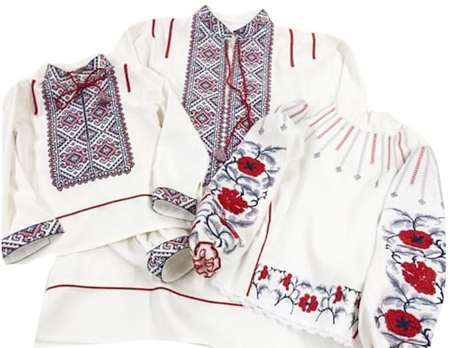

У нашій родині традиція вишивання передається від покоління до покоління. У святкові дні ми вдягаємо традиційний український одяг, який виготовляли наші бабусі. Особливу увагу приділяємо орнаментам, які символізують родинний затишок, кохання та благополуччя.
Наші сімейні традиції

Виготовлення писанок
На Великдень ми збираємось разом і розписуємо писанки, дотримуючись давніх технік та використовуючи традиційні орнаменти. Кожна писанка має своє значення та оберігає наш дім.
Святкування народних свят
Наша родина активно бере участь у святкуванні українських традиційних свят, таких як Різдво, Івана Купала та Масниця. Ми співаємо колядки, готуємо обрядові страви та зберігаємо звичаї нашого народу.